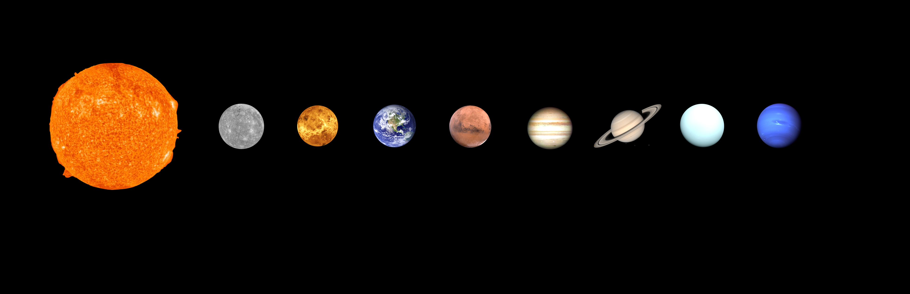

The Solar System with planets and moons in true color. Dwarf planets are also included from both the Asteroid Belt and the Kuiper Belt. Distance between them is not to scale.
CactiStaccingCrane, CC BY-SA 4.0, via Wikimedia Commons.

Welcome home.
The Solar System is where we live. It consists of the Sun (our star) and 8 planets that orbit around the Sun. As well as the planets, there are also moons, dwarf planets, comets and asteroids that all orbit the Sun. The Solar System is a very big place. Its outer edge is estimated to be around 100,000 times the Earth-Sun distance. For comparison, the Voyager 1 space probe, which is humankind's most distant spacecraft, has so-far only reached a distance of around 125 times the Earth-Sun distance, or around 0.1% of the length of the Solar System.
Going left to right in increasing distance from the Sun, the eight planets of the Solar System, with the number of confirmed moons as of December 2023 shown in brackets, are:
The first four planets are called the "terrestrial" or "rocky" planets because they are mostly composed of rocky materials. This makes them denser than all the other planets. Jupiter and Saturn are called the "gas giants" because they are mostly made of gas. They are the largest planets in the Solar System (hence their noticeably larger number of moons). Finally, further out in the Solar System lies Uranus and Neptune. They are called the "ice giants" not because they are made up of water ice! But rather because, further out in the Solar System, it is quite a bit colder, so water and organic molecules tend to freeze and exist as ices on the planets, hence the name. The ice giants are smaller than the gas giants, but larger than the rocky planets.
Whether or not our Solar System is special depends largely on your point of view. On the one hand, we are indeed very special. This is because our Solar System contains the planet Earth, which is the only place in the Universe we currently know of that has life. Life on Earth is a very special thing, but whether or not there is also life elsewhere in the Solar System, or the Universe at large, is currently unknown. On the other hand, the Solar System is not special in any other way. The Sun is a typical star. There are billions of other Solar Systems in our galaxy, the Milky Way, and our galaxy itself is only one of trillions in the observable Universe.